Web Applications
Web applications are interactive applications that run on web browsers. Web applications usually adopt a client-server architecture to run and handle interactions. They typically have front end components (i.e., the website interface, or “what the user sees”) that run on the client-side (browser) and other back end components (web application source code) that run on the server-side (back end server/databases).
This allows organizations to host powerful applications with near-complete real-time control over their design and functionality while being accessible worldwide. Some examples of typical web applications include online email services like Gmail, online retailers Amazon, and online word processors like Google Docs.
Web applications are not exclusive to giant providers like Google or Microsoft but can be developed by any web developer and hosted online in any of the common hosting services, to be used by anyone on the internet. This is why today we have millions of web applications all over the internet, with billions of users interacting with them every day
Web Applications vs. Websites
In the past, we interacted with websites that are static and cannot be changed in real-time. This means that traditional websites were statically created to represent specific information, and this information would not change with our interaction. To change the website’s content, the corresponding page has to be edited by the developers manually. These types of static pages do not contain functions and, therefore, do not produce real-time changes. That type of website is also known as Web 1.0.
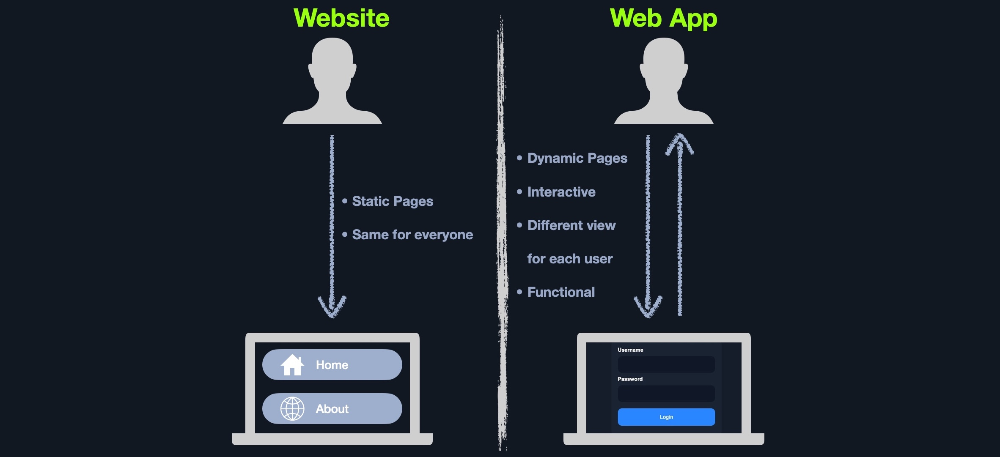
In the past, we interacted with websites that are static and cannot be changed in real-time. This means that traditional websites were statically created to represent specific information, and this information would not change with our interaction. To change the website’s content, the corresponding page has to be edited by the developers manually. These types of static pages do not contain functions and, therefore, do not produce real-time changes. That type of website is also known as Web 1.0.
- Being modular
- Running on any display size
- Running on any platform without being optimized
Web Application Distribution
There are many open-source web applications used by organizations worldwide that can be customized to meet each organization’s needs. Some common open source web applications includ
- WordPress
- OpenCart
- Joomla
There are also proprietary ‘closed source’ web applications, which are usually developed by a certain organization and then sold to another organization or used by organizations through a subscription plan model. Some common closed source web applications include:
- Wix
- Shopify
- DotNetNuke
Security Risks of Web Applications
Web application attacks are prevalent and present a challenge for most organizations with a web presence, regardless of their size. After all, they are usually accessible from any country by everyone with an internet connection and a web browser and usually offer a vast attack surface. As web applications become more complicated and advanced, so does the possibility of critical vulnerabilities being incorporated into their design.
Since web applications are run on servers that may host other sensitive information and are often also linked to databases containing sensitive user or corporate data, all of this data could be compromised if a web site is successfully attacked. This is why it is critical for any business that utilizes web applications to properly test these applications for vulnerabilities and patch them promptly while testing that the patch fixes the flaw and does not inadvertently introduce any new flaws.
Web application penetration testing is an increasingly critical skill to learn. Any organization looking to secure their internet-facing (and internal) web applications should undergo frequent web application tests and implement secure coding practices at every development life cycle stage.
To properly pentest web applications, we need to understand how they work, how they are developed, and what kind of risk lies at each layer and component of the application depending on the technologies in use.
ne of the most current and widely used methods for testing web applications is the OWASP Web Security Testing Guide.
One of the most common procedures is to start by reviewing a web application’s front end components, such as HTML, CSS and JavaScript (also known as the front end trinity), and attempt to find vulnerabilities such as Sensitive Data Exposure and Cross-Site Scripting (XSS). Once all front end components are thoroughly tested, we would typically review the web application’s core functionality and the interaction between the browser and the webserver to enumerate the technologies the webserver uses and look for exploitable flaws. We typically assess web applications from both an unauthenticated and authenticated perspective (if the application has login functionality) to maximize coverage and review every possible attack scenario.
Web Application Layout
No two web applications are identical. Businesses create web applications for a multitude of uses and audiences. Web applications are designed and programmed differently, and back end infrastructure can be set up in many different ways. It is important to understand the various ways web applications can run behind the scenes, the structure of a web application, its components, and how they can be set up within a company’s infrastructure.
Web application layouts consist of many different layers that can be summarized with the following three main categories:
| Category | Description |
|---|---|
| Web Application Infrastructure | Describes the structure of required components, such as the database, needed for the web application to function as intended. Since the web application can be set up to run on a separate server, it is essential to know which database server it needs to access. |
| Web Application Components | The components that make up a web application represent all the components that the web application interacts with. These are divided into the following three areas: UI/UX, Client, and Server components. |
| Web Application Architecture | Architecture comprises all the relationships between the various web application component |
Web Application Infrastructure
Web applications can use many different infrastructure setups. These are also called models. The most common ones can be grouped into the following four types:
- Client-Server
- One Server
- Many Servers - One Database
- Many Servers - Many Databases
Client-Server
Web applications often adopt the client-server model. A server hosts the web application in a client-server model and distributes it to any clients trying to access it. 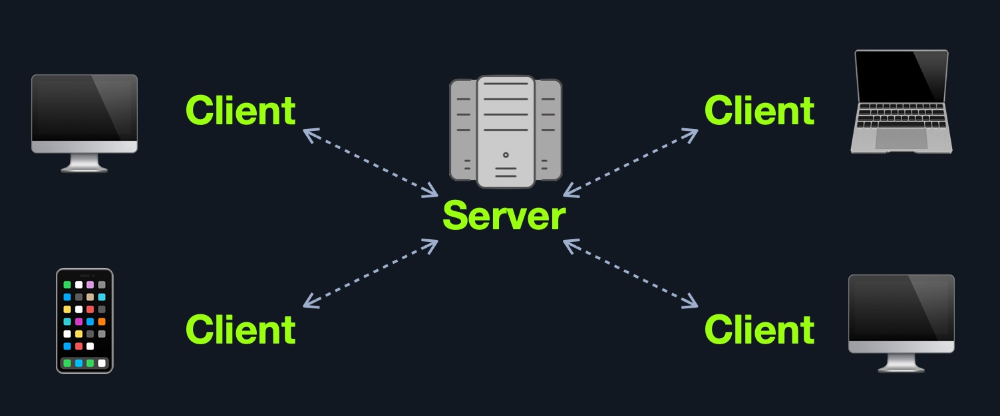
In this model, web applications have two types of components, those in the front end, which are usually interpreted and executed on the client-side (browser), and components in the back end, usually compiled, interpreted, and executed by the hosting server.
When a client visits the web application’s URL (web address, i.e., https://www.acme.local), the server uses the main web application interface (UI). Once the user clicks on a button or requests a specific function, the browser sends an HTTP web request to the server, which interprets this request and performs the necessary task(s) to complete the request (i.e., logging the user in, adding an item to the shopping cart, browsing to another page, etc.). Once the server has the required data, it sends the result back to the client’s browser, displaying the result in a human-readable way.
However, even though most web applications utilize a client-server front-back end architecture, there are many design implementations.
One Server
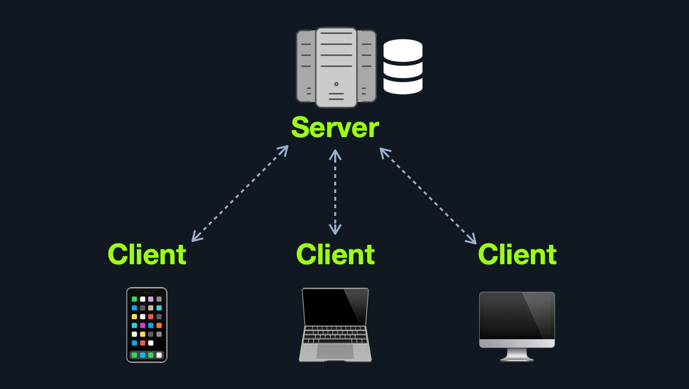
If any web application hosted on this server is compromised in this architecture, then all web applications’ data will be compromised. This design represents an “all eggs in one basket” approach since if any of the hosted web applications are vulnerable, the entire webserver becomes vulnerable.
Many Servers - One Database
This model separates the database onto its own database server and allows the web applications’ hosting server to access the database server to store and retrieve data. It can be seen as many-servers to one-database and one-server to one-database, as long as the database is separated on its own database server. 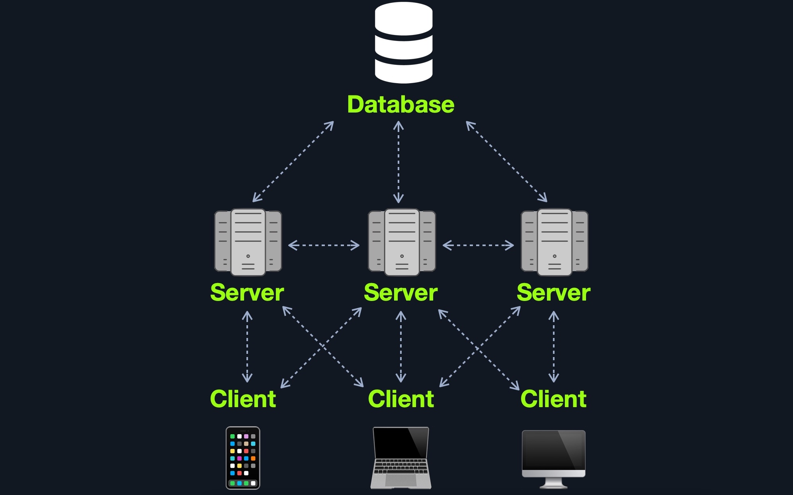 This model’s main advantage (from a security point of view) is segmentation, where each of the main components of a web application is located and hosted separately. In case one webserver is compromised, other webservers are not directly affected. Similarly, if the database is compromised (i.e., through a SQL injection vulnerability), the web application itself is not directly affected. There are still access control measures that need to be implemented after asset segmentation, such as limiting web application access to only data needed to function as intendedThis model’s main advantage (from a security point of view) is segmentation, where each of the main components of a web application is located and hosted separately. In case one webserver is compromised, other webservers are not directly affected. Similarly, if the database is compromised (i.e., through a SQL injection vulnerability), the web application itself is not directly affected. There are still access control measures that need to be implemented after asset segmentation, such as limiting web application access to only data needed to function as intended
Many Servers - Many Databases
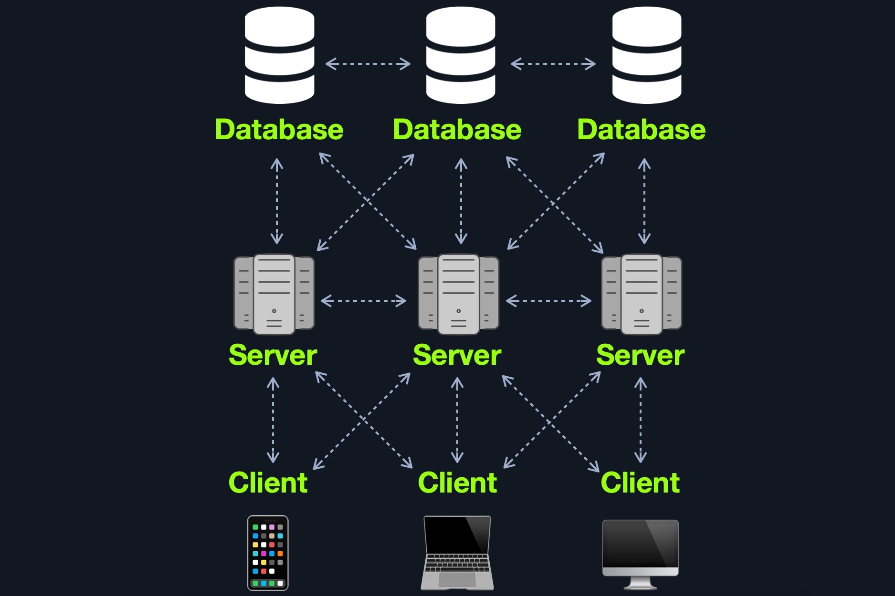
This design is also widely used for redundancy purposes, so if any web server or database goes offline, a backup will run in its place to reduce downtime as much as possible
Web Application Component
Each web application can have a different number of components. Nevertheless, all of the components of the models mentioned previously can be broken down to:
- Client
- Server
- Webserver
- Web Application Logic
- Database
- Services (Microservices)
- 3rd Party Integrations
- Web Application Integrations
- Functions (Serverless)
Web Application Architecture
| Layer | Description |
|---|---|
| Presentation Layer | Consists of UI process components that enable communication with the application and the system. These can be accessed by the client via the web browser and are returned in the form of HTML, JavaScript, and CSS. |
| Application Layer | This layer ensures that all client requests (web requests) are correctly processed. Various criteria are checked, such as authorization, privileges, and data passed on to the client. |
| Data Layer | The data layer works closely with the application layer to determine exactly where the required data is stored and can be accessed |
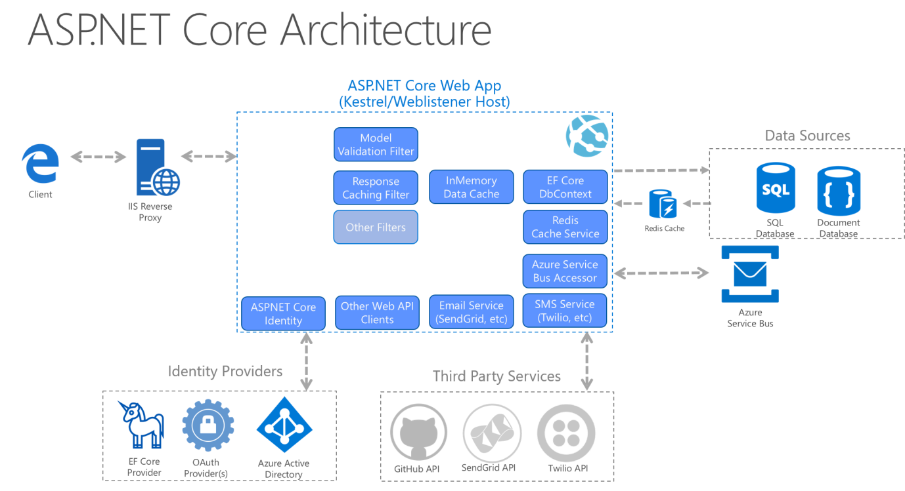
Microservices
We can think of microservices as independent components of the web application, which in most cases are programmed for one task only. For example, for an online store, we can decompose core tasks into the following components:
- Registration
- Search
- Payments
- Ratings
- Reviews
These components communicate with the client and with each other. The communication between these microservices is stateless, which means that the request and response are independent. This is because the stored data is stored separately from the respective microservices.
This AWS whitepaper provides an excellent overview of microservice implementation.
Serverless
Cloud providers such as AWS, GCP, Azure, among others, offer serverless architectures. These platforms provide application frameworks to build such web applications without having to worry about the servers themselves. These web applications then run in stateless computing containers (Docker, for example). This type of architecture gives a company the flexibility to build and deploy applications and services without having to manage infrastructure; all server management is done by the cloud provider, which gets rid of the need to provision, scale, and maintain servers needed to run applications and databases.
You can read more about serverless computing and its various use cases here.
Front End vs. Back End
We may have heard the terms front end and back end web development, or the term Full Stack web development, which refers to both front and back end web development. These terms are becoming synonymous with web application development, as they comprise the majority of the web development cycle. However, these terms are very different from each other, as each refers to one side of the web application, and each function and communicate in different are
Front End
The front end of a web application contains the user’s components directly through their web browser (client-side). These components make up the source code of the web page we view when visiting a web application and usually include HTML, CSS, and JavaScript, which is then interpreted in real-time by our browser
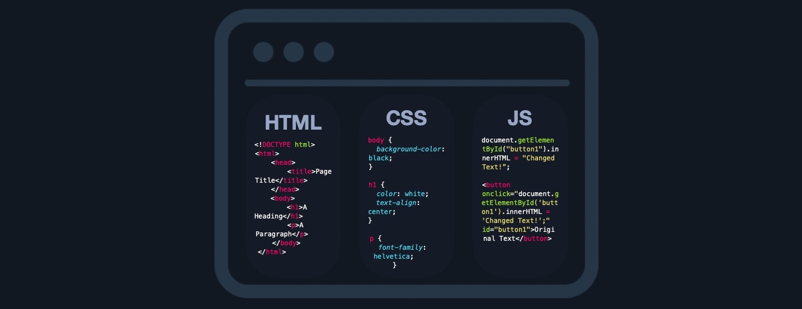
This includes everything that the user sees and interacts with, like the page’s main elements such as the title and text HTML, the design and animation of all elements CSS, and what function each part of a page performs JavaScript.
There are many sites available to us to practice front end coding. One example is this one.
Back End
The back end of a web application drives all of the core web application functionalities, all of which is executed at the back end server, which processes everything required for the web application to run correctly. It is the part we may never see or directly interact with, but a website is just a collection of static web pages without a back end.
There are four main back end components for web applications: |Components|Description| |--------------|---------------| |Back end Servers |The hardware and operating system that hosts all other components and are usually run on operating systems like Linux, Windows, or using Containers. |Web Servers |Web servers handle HTTP requests and connections. Some examples are Apache, NGINX, and IIS. |Databases |Databases (DBs) store and retrieve the web application data. Some examples of relational databases are MySQL, MSSQL, Oracle, PostgreSQL, while examples of non-relational databases include NoSQL and MongoDB. |Development Frameworks | Development Frameworks are used to develop the core Web Application. Some well-known frameworks include PHP, C#, Java, Python, and NodeJS JavaScript.
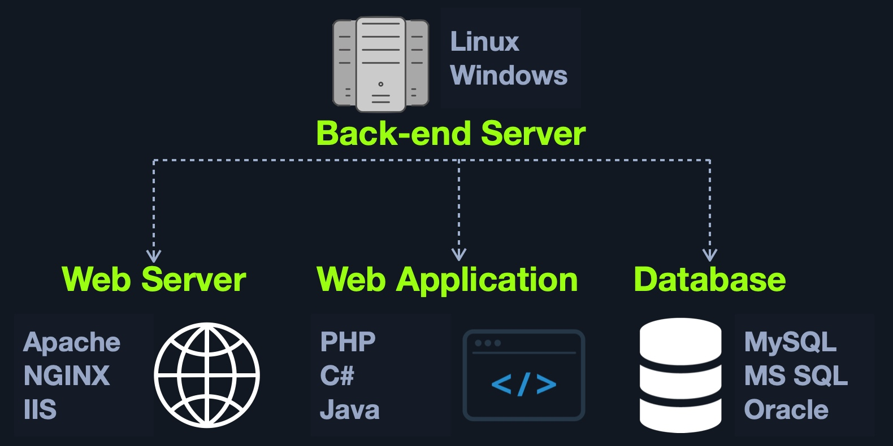
Securing Front/Back End
Even though in most cases, we will not have access to the back end code to analyze the individual functions and the structure of the code, it does not make the application invulnerable. It could still be exploited by various injection attacks, for example.
Suppose we have a search function in a web application that mistakenly does not process our search queries correctly. In that case, we could use specific techniques to manipulate the queries in such a way that we gain unauthorized access to specific database data SQL injections or even execute operating system commands via the web application, also known as Command Injections.
The top 20 most common mistakes web developers make that are essential for us as penetration testers are:
- Permitting Invalid Data to Enter the Database
- Focusing on the System as a Whole
- Establishing Personally Developed Security Methods
- Treating Security to be Your Last Step
- Developing Plain Text Password Storage
- Creating Weak Passwords
- Storing Unencrypted Data in the Database
- Depending Excessively on the Client Side
- Being Too Optimistic
- Permitting Variables via the URL Path Name
- Trusting third-party code
- Hard-coding backdoor accounts
- Unverified SQL injections
- Remote file inclusions
- Insecure data handling
- Failing to encrypt data properly
- Not using a secure cryptographic system
- Ignoring layer 8
- Review user actions
- Web Application Firewall misconfigurations
These mistakes lead to the OWASP Top 10 vulnerabilities for web applications, which we will discuss in other modules:
- Injection
- Broken Authentication
- Sensitive Data Exposure
- XML External Entities (XXE)
- Broken Access Control
- Security Misconfiguration
- Cross-Site Scripting (XSS)
- Insecure Deserialization
- Using Components with Known Vulnerabilities
- Insufficient Logging & Monitorin
Sensitive Data Exposure
All of the front end components we covered are interacted with on the client-side. Therefore, if they are attacked, they do not pose a direct threat to the core back end of the web application and usually will not lead to permanent damage. However, as these components are executed on the client-side, they put the end-user in danger of being attacked and exploited if they do have any vulnerabilities. If a front end vulnerability is leveraged to attack admin users, it could result in unauthorized access, access to sensitive data, service disruption, and more.
Although the majority of web application penetration testing is focused on back end components and their functionality, it is important also to test front end components for potential vulnerabilities, as these types of vulnerabilities are can sometimes be utilized to gain access to sensitive functionality (i.e., an admin panel), which may lead to compromising the entire server.
Sensitive Data Exposure refers to the availability of sensitive data in clear-text to the end-user. This is usually found in the source code of the web page or page source on the front end of web applications.
HTML Injection
Another major aspect of front end security is validating and sanitizing accepted user input. In many cases, user input validation and sanitization is carried out on the back end. However, some user input would never make it to the back end in some cases and is completely processed and rendered on the front end. Therefore, it is critical to validate and sanitize user input on both the front end and the back end.
When a user has complete control of how their input will be displayed, they can submit HTML code, and the browser may display it as part of the page. This may include a malicious HTML code, like an external login form, which can be used to trick users into logging in while actually sending their login credentials to a malicious server to be collected for other attacks.
Another example of HTML Injection is web page defacing. This consists of injecting new HTML code to change the web page’s appearance, inserting malicious ads, or even completely changing the page. This type of attack can result in severe reputational damage to the company hosting the web application.
Cross-Site Scripting (XSS)
HTML Injection vulnerabilities can often be utilized to also perform Cross-Site Scripting (XSS) attacks by injecting JavaScript code to be executed on the client-side. Once we can execute code on the victim’s machine, we can potentially gain access to the victim’s account or even their machine. XSS is very similar to HTML Injection in practice. However, XSS involves the injection of JavaScript code to perform more advanced attacks on the client-side, instead of merely injecting HTML code. There are three main types of XSS:
|Type|Description|
|--------|---------------|
|Reflected XSS |Occurs when user input is displayed on the page after processing (e.g., search result or error message).
|Stored XSS |Occurs when user input is stored in the back end database and then displayed upon retrieval (e.g., posts or comments).
|DOM XSS |Occurs when user input is directly shown in the browser and is written to an HTML DOM object (e.g., vulnerable username or page title).
In the example we saw for HTML Injection, there was no input sanitization whatsoever. Therefore, it may be possible for the same page to be vulnerable to XSS attacks. We can try to inject the following DOM XSS JavaScript code as a payload, which should show us the cookie value for the current user:
This payload is accessing the HTML document tree and retrieving the cookie object’s value. When the browser processes our input, it will be considered a new DOM, and our JavaScript will be executed, displaying the cookie value back to us in a pop
Cross-Site Request Forgery (CSRF)
The third type of front end vulnerability that is caused by unfiltered user input is Cross-Site Request Forgery (CSRF). CSRF attacks may utilize XSS vulnerabilities to perform certain queries, and API calls on a web application that the victim is currently authenticated to.
A common CSRF attack to gain higher privileged access to a web application is to craft a JavaScript payload that automatically changes the victim’s password to the value set by the attacker. Once the victim views the payload on the vulnerable page (e.g., a malicious comment containing the JavaScript CSRF payload), the JavaScript code would execute automatically. It would use the victim’s logged-in session to change their password. Once that is done, the attacker can log in to the victim’s account and control it.
CSRF can also be leveraged to attack admins and gain access to their accounts. Admins usually have access to sensitive functions, which can sometimes be used to attack and gain control over the back-end server (depending on the functionality provided to admins within a given web application). Following this example, instead of using JavaScript code that would return the session cookie, we would load a remote .js (JavaScript) file, as follows:
The exploit.js file would contain the malicious JavaScript code that changes the user’s password. Developing the exploit.js in this case requires knowledge of this web application’s password changing procedure and APIs. The attacker would need to create JavaScript code that would replicate the desired functionality and automatically carry it out (i.e., JavaScript code that changes our password for this specific web application).
Prevention
Though there should be measures on the back end to detect and filter user input, it is also always important to filter and sanitize user input on the front end before it reaches the back end, and especially if this code may be displayed directly on the client-side without communicating with the back end. Two main controls must be applied when accepting user input:
| Type | Description |
|---|---|
| Sanitization | Removing special characters and non-standard characters from user input before displaying it or storing it. |
| Validation | Ensuring that submitted user input matches the expected format (i.e., submitted email matched email format) |
Furthermore, it is also important to sanitize displayed output and clear any special/non-standard characters. In case an attacker manages to bypass front end and back end sanitization and validation filters, it will still not cause any harm on the front end.
Once we sanitize and/or validate user input and displayed output, we should be able to prevent attacks like HTML Injection, XSS, or CSRF. Another solution would be to implement a web application firewall (WAF), which should help to prevent injection attempts automatically. However, it should be noted that WAF solutions can potentially be bypassed, so developers should follow coding best practices and not merely rely on an appliance to detect/block attacks.
This Cross-Site Request Forgery Prevention Cheat Sheet from OWASP discusses the attack and prevention measures in greater detail.
Back End Servers
A back end server is the hardware and operating system on the back end that hosts all of the applications necessary to run the web application. It is the real system running all of the processes and carrying all of the tasks that make up the entire web application. The back end server would fit in the Data access layer.
Software
The back end server contains the other 3 back end components:
- Web Server
- Database
- Development Framework
There are many popular combinations of “stacks” for back-end servers, which contain a specific set of back end components. Some common examples include:
| Combinations | Components |
|---|---|
| LAMP | Linux, Apache, MySQL, and PHP. |
| WAMP | Windows, Apache, MySQL, and PHP. |
| WINS | Windows, IIS, .NET, and SQL Server |
| MAMP | macOS, Apache, MySQL, and PHP. |
| XAMPP | Cross-Platform, Apache, MySQL, and PHP/PERL. |
Web Servers
A web server is an application that runs on the back end server, which handles all of the HTTP traffic from the client-side browser, routes it to the requested pages, and finally responds to the client-side browser. Web servers usually run on TCP ports 80 or 443, and are responsible for connecting end-users to various parts of the web application, in addition to handling their various responses.
Workflow
A typical web server accepts HTTP requests from the client-side, and responds with different HTTP responses and codes, like a code 200 OK response for a successful request, a code 404 NOT FOUND when requesting pages that do not exist, code 403 FORBIDDEN for requesting access to restricted pages, and so on.
Databases
Web applications utilize back end databases to store various content and information related to the web application. This can be core web application assets like images and files, web application content like posts and updates, or user data like usernames and passwords. This allows web applications to easily and quickly store and retrieve data and enable dynamic content that is different for each user.
There are many different types of databases, each of which fits a certain type of use. Most developers look for certain characteristics in a database, such as speed in storing and retrieving data, size when storing large amounts of data, scalability as the web application grows, and cost.
Relational (SQL)
Relational (SQL) databases store their data in tables, rows, and columns. Each table can have unique keys, which can link tables together and create relationships between tables.
For example, we can have a users table in a relational database containing columns like id, username, first_name, last_name, and so on. The id can be used as the table key. Another table, posts, may contain posts made by all users, with columns like id, user_id, date, content, and so on.
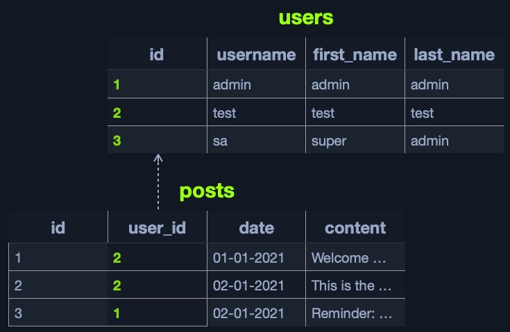
We can link the id from the users table to the user_id in the posts table to easily retrieve the user details for each post, without having to store all user details with each post.
The relationship between tables within a database is called a Schema.
This way, by using relational databases, it becomes very quick and easy to retrieve all data about a certain element from all databases. For example, we can retrieve all details linked to a certain user from all tables with a single query.
This makes relational databases very fast and reliable for big datasets that have a clear structure and design. Databases also make data management very efficient.
Some of the most common relational databases include:
| Type | Description |
|---|---|
| MySQL | The most commonly used database around the internet. It is an open-source database and can be used completely free of charge |
| MSSQL | Microsoft’s implementation of a relational database. Widely used with Windows Servers and IIS web servers |
| Oracle | A very reliable database for big businesses, and is frequently updated with innovative database solutions to make it faster and more reliable. It can be costly, even for big businesses |
| PostgreSQL | Another free and open-source relational database. It is designed to be easily extensible, enabling adding advanced new features without needing a major change to the initial database design |
Other common SQL databases include: SQLite, MariaDB, Amazon Aurora, and Azure SQL.
Non-relational (NoSQL)
A non-relational database does not use tables, rows, columns, primary keys, relationships, or schemas. Instead, a NoSQL database stores data using various storage models, depending on the type of data stored.
Due to the lack of a defined structure for the database, NoSQL databases are very scalable and flexible. When dealing with datasets that are not very well defined and structured, a NoSQL database would be the best choice for storing our data.
There are 4 common storage models for NoSQL databases:
- Key-Value
- Document-Based
- Wide-Column
- Graph
Each of the above models has a different way of storing data. For example, the Key-Value model usually stores data in JSON or XML, and has a key for each pair, storing all of its data as its value:
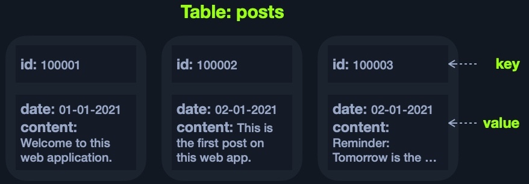
Some of the most common NoSQL databases include:
| Type | Description |
|---|---|
| MongoDB | The most common NoSQL database. It is free and open-source, uses the |
| ElasticSearch | Another free and open-source NoSQL database. It is optimized for storing and analyzing huge datasets. As its name suggests, searching for data within this database is very fast and efficient |
| Apache Cassandra | Also free and open-source. It is very scalable and is optimized for gracefully handling faulty values |
Other common NoSQL databases include: Redis, Neo4j, CouchDB, and Amazon DynamoDB.
Development Frameworks & APIs
In addition to web servers that can host web applications in various languages, there are many common web development frameworks that help in developing core web application files and functionality. With the increased complexity of web applications, it may be challenging to create a modern and sophisticated web application from scratch. Hence, most of the popular web applications are developed using web frameworks.
Web APIs
An API (Application Programming Interface) is an interface within an application that specifies how the application can interact with other applications. For Web Applications, it is what allows remote access to functionality on back end components. APIs are not exclusive to web applications and are used for software applications in general. Web APIs are usually accessed over the HTTP protocol and are usually handled and translated through web servers.
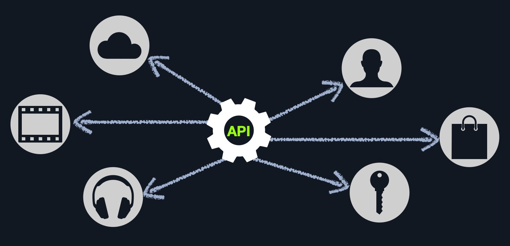
A weather web application, for example, may have a certain API to retrieve the current weather for a certain city. We can request the API URL and pass the city name or city id, and it would return the current weather in a JSON object. Another example is Twitter’s API, which allows us to retrieve the latest Tweets from a certain account in XML or JSON formats, and even allows us to send a Tweet ‘if authenticated’, and so on.
To enable the use of APIs within a web application, the developers have to develop this functionality on the back end of the web application by using the API standards like SOAP or REST.
SOAP
The SOAP (Simple Objects Access) standard shares data through XML, where the request is made in XML through an HTTP request, and the response is also returned in XML. Front end components are designed to parse this XML output properly.
REST
The REST (Representational State Transfer) standard shares data through the URL path ‘i.e. search/users/1’, and usually returns the output in JSON format ‘i.e. userid 1’.
Public CVE
As many organizations deploy web applications that are publicly used, like open-source and proprietary web applications, these web applications tend to be tested by many organizations and experts around the world. This leads to frequently uncovering a large number of vulnerabilities, most of which get patched and then shared publicly and assigned a CVE (Common Vulnerabilities and Exposures) record and score.
Many penetration testers also make proof of concept exploits to test whether a certain public vulnerability can be exploited and usually make these exploits available for public use, for testing and educational purposes. This makes searching for public exploits the very first step we must go through for web applications
Tip: The first step is to identify the version of the web application. This can be found in many locations, like the source code of the web application. For open source web applications, we can check the repository of the web application and identify where the version number is shown (e.g,. in (version.php) page), and then check the same page on our target web application to confirm.
Once we identify the web application version, we can search Google for public exploits for this version of the web application. We can also utilize online exploit databases, like Exploit DB, Rapid7 DB, or Vulnerability Lab. The following example shows a search for WordPress public exploits in Rapid7 DB:
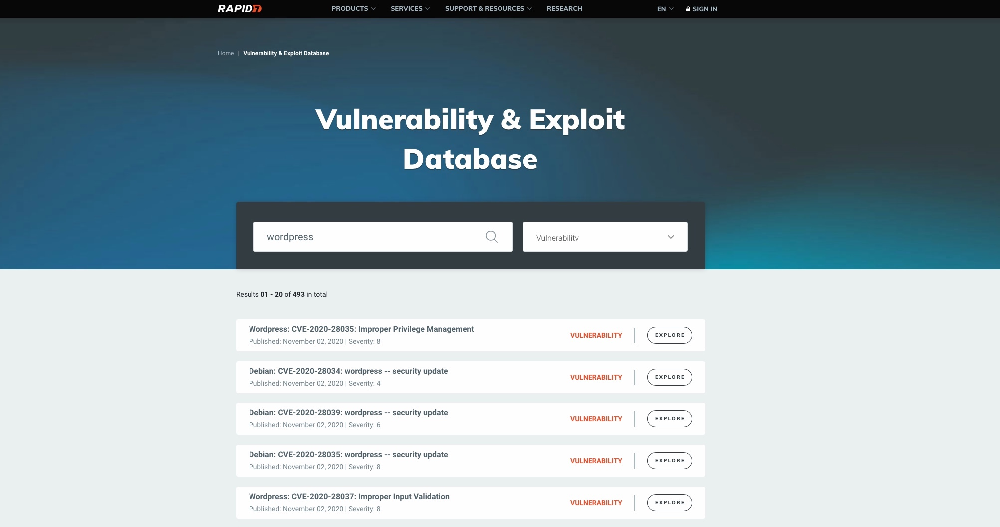
We would usually be interested in exploits with a CVE score of 8-10 or exploits that lead to Remote Code Execution. Other types of public exploits should also be considered if none of the above is available.
Common Vulnerability Scoring System (CVSS)
The Common Vulnerability Scoring System (CVSS) is an open-source industry standard for assessing the severity of security vulnerabilities. This scoring system is often used as a standard measurement for organizations and governments that need to produce accurate and consistent severity scores for their systems’ vulnerabilities. This helps with the prioritization of resources and the response to a given threat.
Nist search for CVSS